Al M. Frate da sud, ovvero da Cellino risalendo la val Betigia fino alla forcella a nord del Vuom, poi per eccezionale viaz di camosci traversando alla Costa Landrone, infine su per ripidi prati e canali fino in cima. Beninteso, "eccezionale" non per le caratteristiche intrinseche del percorso, ma per lo stupore e la contentezza che abbiamo provato a trovare un così bel sentiero, continuo, marcato e logico, proprio nel tratto clou. Nota che ciò non sarebbe avvenuto se l'ambiente non fosse integro. È ciò che ti rimane; del M. Frate, dopotutto, chissenefrega.
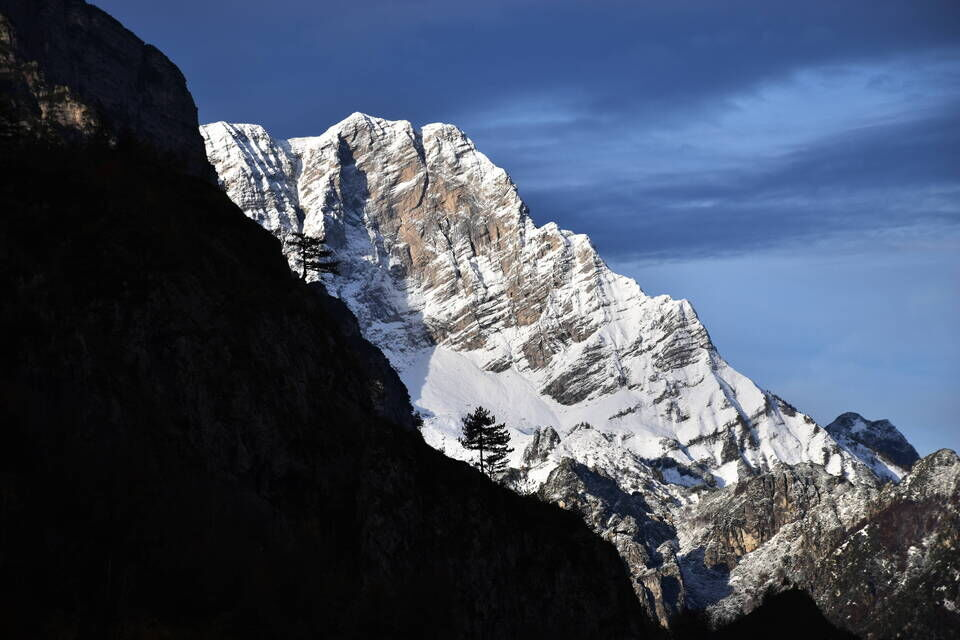
Autunno in val Betigia.
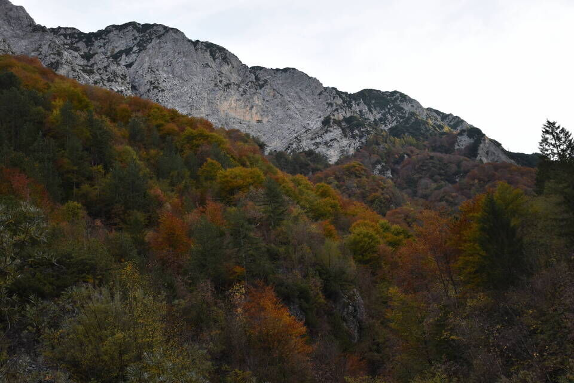
Risaliamo faticosamente la val Betigia fino alla forcella a nord del Vuom.
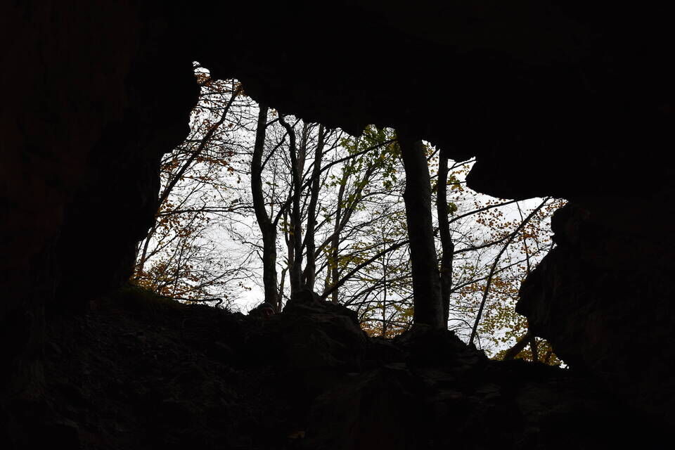
Da lì parte un insperato troi, in versante val Ruassa, che traversa lungamente il versante, alla stessa quota della forcella, con frequenti sali e scendi, e porta piuttosto in alto sulla Costa Landrone. Ma questo mica lo sapevamo in anticipo. Che bello!
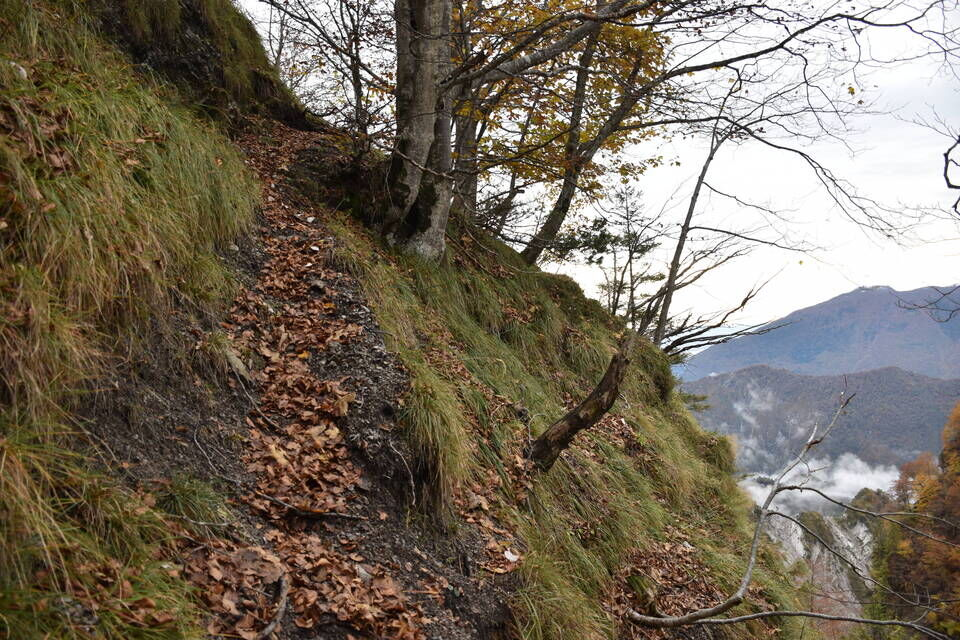
È poca cosa, sì, ma il fatto di averlo «scoperto» da soli e in piena libertà cambia tutto.
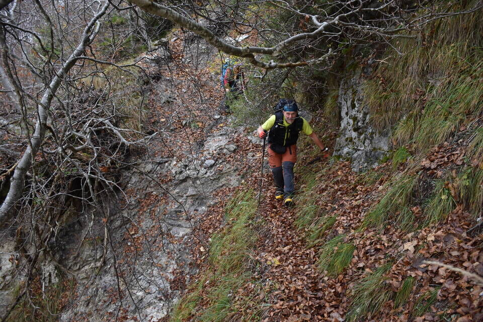
Il Vuom di Betigia.
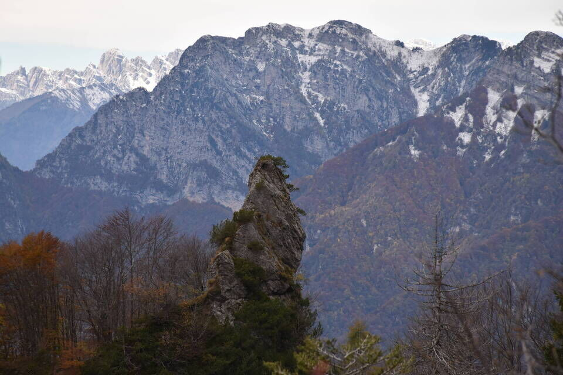
M. Cuvîl.
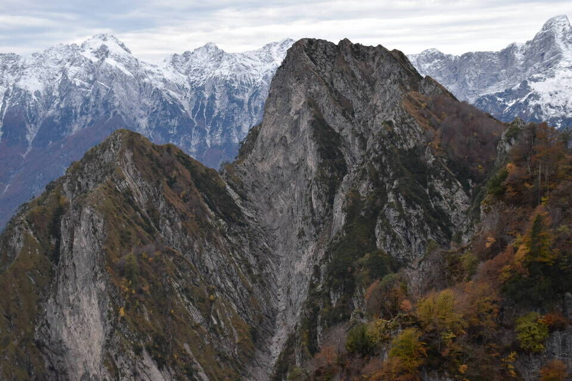
Sui prati a sud del M. Frate.
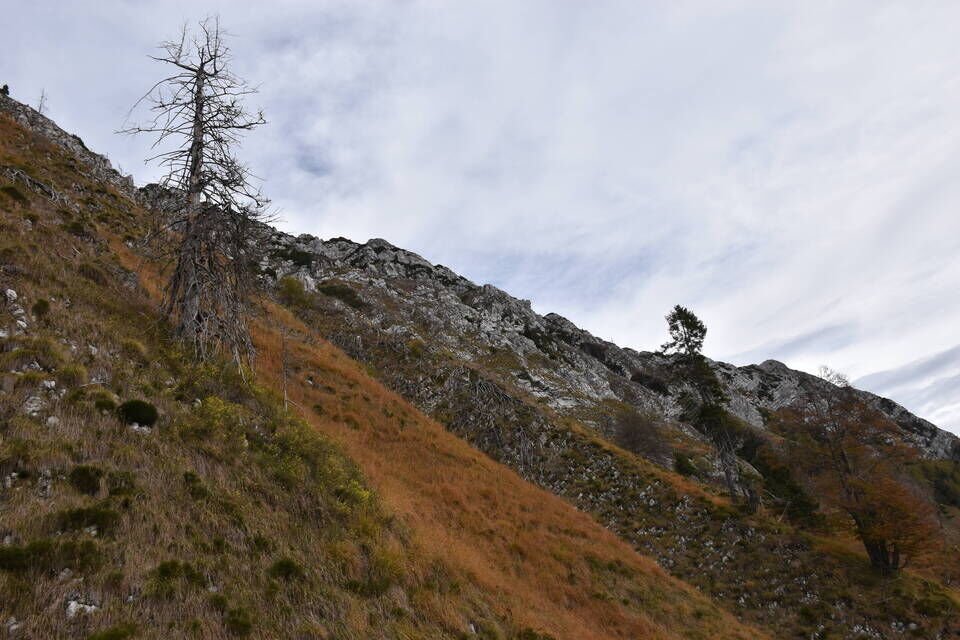
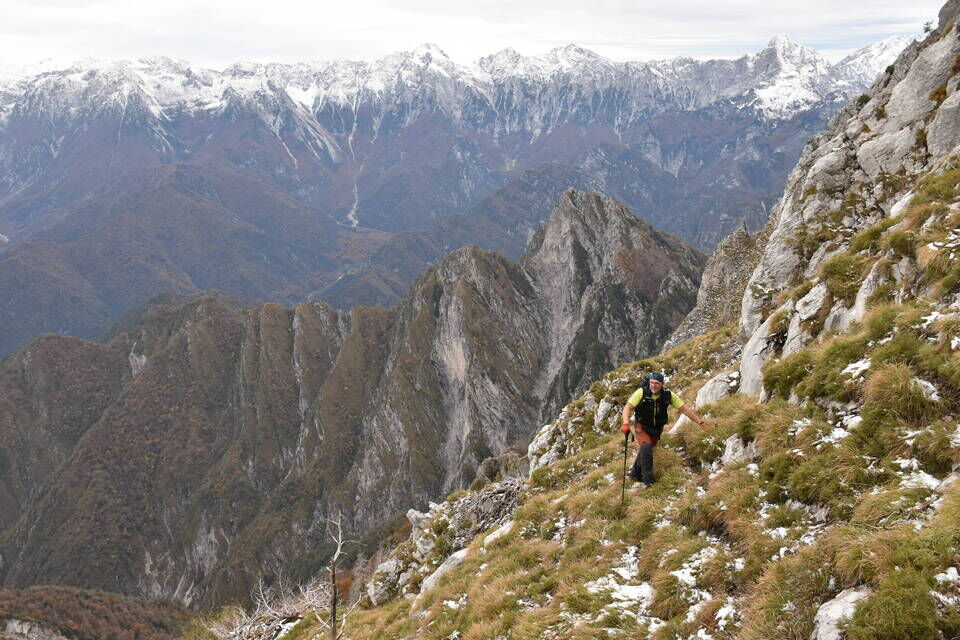
Salita a piacere, a seconda dei propri gusti.
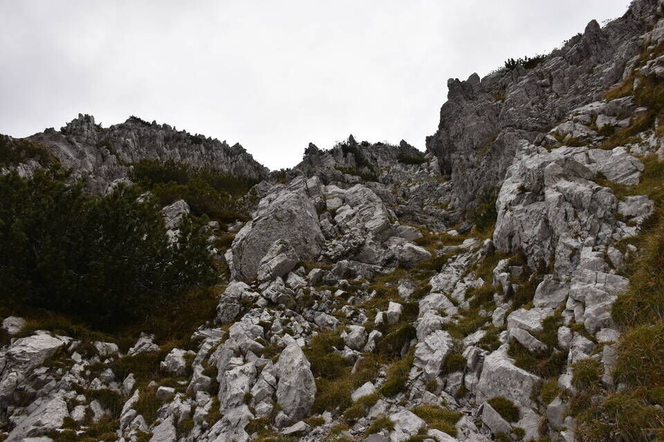
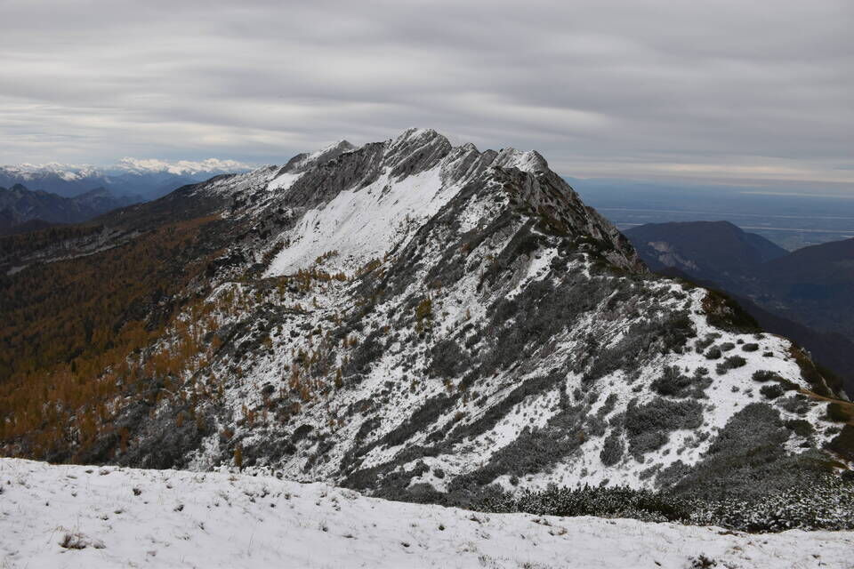